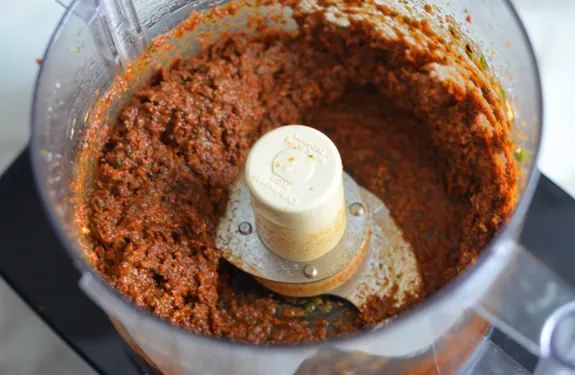

Sun-dried Tomato Pesto

An easy to make pesto, perfect for pasta, risotto, grill cheese, and anything else you can think of
Ingredients
- 1 (8.5-ounce) jar sun-dried tomatoes packed in olive oil
- 2 cloves garlic
- 1/4 teaspoon salt (taste to see if you need to add more)
- 1/4 teaspoon crushed red pepper flakes
- 1/2 teaspoon sugar
- 1 cup packed fresh basil leaves
- 1/4 cup + 2 tablespoon pine nuts
- 1/3 cup freshly grated Parmigiano-Reggiano
- 2 tablespoon water
Steps
- In the bowl of a food processor fitted with the steel blade, combine the sun-dried tomatoes with their oil, garlic, salt, red pepper flakes, sugar, basil, pine nuts, Parmigiano-Reggiano and 2 tablespoons of water.
- Pulse, scraping down the sides as necessary, until the mixture is finely puréed.
- Taste to see if you needed to add more salt. Bon appetit!